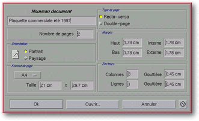

<!-- Documentation Xclamation (c)1994-2000 AXENE contact axene@axene.org>
<html>

<head>
<title>Nouveau document</title>
</head>

<body BGCOLOR="#FFFFFF" BACKGROUND="Images/back.gif" TEXT="#000000">

<p ALIGN="right">  </p>

<p><br>
<br>
Cette boîte de dialogue permet de choisir les caractéristiques du document qui va être
créé. Un document est composé uniquement de pages. Elles seront créées avec les
paramètres définis dans cette boîte de dialogue, mais elles seront modifiables
individuellement à partir de la boîte de dialogue '<a HREF="Box_Modify_Page.html">Modification
de page</a>'. <br>
<br>
</p>

<hr>

<p><br>
</p>

<p align="center"><br>
<small><i>Photo d'écran&nbsp;: Boîte de nouveau document </i></small><br>
</p>

<p><br>
</p>

<hr>

<p><br>
</p>

<h3>Partie gauche de la boîte de dialogue&nbsp;:</h3>

<ul>
  <li><a NAME="edit_document_name">En haut, le champ texte permet de <b>modifier le nom du
    document</b>. Par défaut le nom est <i>&quot;Sans Titre X&quot;</i> où X est un numéro.
    Changer le nom du document permet d'utiliser automatiquement ce nom comme nom de fichier
    par défaut lors de la sauvegarde. Si le nom n'est pas modifié lors de la création du
    document, celui-ci prendra le nom du fichier lors de la première sauvegarde. Le nom du
    document est limité à 31 caractères. </a><br>
    &nbsp;</li>
  <li><a NAME="nb_page_textfield">le champ texte <i>&quot;Nombre de pages&quot;</i> permet de <b>choisir
    le nombre de pages</b> à créer. Si le bouton poussoir <i>&quot;Double-page&quot;</i> est
    enclenché, le nombre de pages indiqué correspond au nombre de pages simples, autrement
    dit la moitié du nombre de pages doubles. </a><br>
    &nbsp;</li>
  <li><a NAME="orientation_frame">la section <i>&quot;Orientation&quot;</i> permet de <b>choisir
    l'orientation des pages</b> à créer. Il y a deux positions pour l'icône double
    boutons&nbsp;:</a><br>
    &nbsp;<ol>
      <li><a NAME="portrait_button">le bouton poussoir <i>&quot;Portrait&quot;</i> permet
        d'afficher les pages dans le sens de la longueur, en d'autres termes la longueur de la
        page est alignée sur l'axe vertical. </a><br>
        &nbsp;</li>
      <li><a NAME="landscape_button">le bouton poussoir <i>&quot;Paysage&quot;</i> permet
        d'afficher les pages dans le sens de la largeur, en d'autres termes la longueur de la page
        est alignée sur l'axe horizontal. </a><br>
        &nbsp;</li>
    </ol>
  </li>
  <li><a NAME="page_format_list">la liste déroulante <i>&quot;Format de page&quot;</i> permet
    de <b>choisir le format des pages</b> à créer dans une liste des formats les plus
    couramment utilisés. L'entrée <i>&quot;Other&quot;</i> est sélectionnée lorsque l'on
    choisit une taille de page non standard. </a><br>
    &nbsp;</li>
  <li><a NAME="size_textfields">les deux champs textes <i>&quot;Tailles&quot;</i> permettent
    de <b>définir la largeur et la longueur des pages</b> créées. Ces deux valeurs sont
    exprimées en centimètres et doivent être comprises entre 1(cm) et 300(cm). </a></li>
</ul>

<p><br>
</p>

<h3>Partie droite de la boîte de dialogue&nbsp;:</h3>

<ul>
  <li><a NAME="recto_verso_button">le bouton poussoir <i>&quot;Recto-verso&quot;</i> permet de
    <b>créer les pages en recto-verso</b>. Les pages créées seront alternativement des
    pages gauches et des pages droites, en commençant par une page droite. Une page gauche
    est affichée avec un ombré sur la gauche et inversement une page droite est affichée
    avec un ombré sur sa droite. </a><br>
    &nbsp;</li>
  <li><a NAME="double_page_button">le bouton poussoir <i>&quot;Double-page&quot;</i> permet de
    <b>créer des pages doubles</b>. Une page double est affichée grâce à deux pages
    simples en vis-à-vis reliées par leur bord vertical. <p><b>Nota&nbsp;:</b> Lorsque les
    modes recto-verso et double-page sont actifs simultanément, le document a l'aspect d'un
    magazine&nbsp;: la première page est une page droite, les pages suivantes sont des pages
    doubles et la dernière page est une page gauche (il faut un nombre pair de pages pour
    obtenir la dernière page gauche). </a><br>
    &nbsp;</p>
  </li>
  <li><a NAME="margins_frame">la section <i>&quot;Marge&quot;</i> permet de <b>définir des
    marges magnétiques</b> sur chaque page simple créée. Une marge est repérée par un
    trait horizontal ou vertical de couleur bleu. On peut définir la taille de quatre
    marges&nbsp;: </a><br>
    &nbsp;<ol>
      <li><a NAME="top_margin_textfield">le champ texte <i>&quot;Haut&quot;</i> définit la taille
        de la <b>marge supérieure</b> de la page. La valeur est exprimée en centimètres et doit
        être comprise entre 0(cm) et 150(cm). </a><br>
        &nbsp;</li>
      <li><a NAME="intern_margin_textfield">le champ texte <i>&quot;Interne&quot;</i> définit la
        taille de la <b>marge interne</b> de la page. Dans une page gauche, la marge interne
        correspond à la marge de droite et dans une page droite, la marge interne correspond à
        la marge de gauche. La valeur est exprimée en centimètres et doit être comprise entre
        0(cm) et 150(cm). </a><br>
        &nbsp;</li>
      <li><a NAME="bottom_margin_textfield">le champ texte <i>&quot;Bas&quot;</i> définit la
        taille de la <b>marge inférieure</b> de la page. La valeur est exprimée en centimètres
        et doit être comprise entre 0(cm) et 150(cm). </a><br>
        &nbsp;</li>
      <li><a NAME="extern_margin_textfield">le champ texte <i>&quot;Externe&quot;</i> définit la
        taille de la <b>marge externe</b> de la page. Dans une page gauche, la marge externe
        correspond à la marge de gauche et dans une page droite, la marge externe correspond à
        la marge de droite. La valeur est exprimée en centimètres et doit être comprise entre
        0(cm) et 150(cm). </a><br>
        &nbsp;</li>
    </ol>
  </li>
  <li><a NAME="sector_frame">la section <i>&quot;Secteurs&quot;</i> permet d'ajouter des
    repères magnétiques dans les pages à créer. Les quatre champs textes de cette section
    permettent de <b>spécifier la façon de diviser l'espace à l'intérieur des marges</b>
    de la page en secteurs réguliers&nbsp;: </a><br>
    &nbsp;<ol>
      <li><a NAME="column_textfield">le champ texte <i>&quot;Colonnes&quot;</i> permet de <b>définir
        le nombre de secteurs verticaux</b> qui vont diviser l'espace à l'intérieur des marges.
        Cette valeur doit être comprise entre 1 et 100. </a><br>
        &nbsp;</li>
      <li><a NAME="column_gutter_textfield">le champ texte <i>&quot;Gouttière&quot;</i>, sur la
        même ligne que le champ texte <i>&quot;Colonnes&quot;</i>, permet de <b>définir l'espace
        séparant deux colonnes</b>. La valeur est exprimée en centimètres et doit être
        comprise entre 0(cm) et 20(cm). Si l'on spécifie deux colonnes et une valeur de
        gouttière de 0(cm), un unique repère vertical magnétique bleu apparaîtra au centre de
        chaque page ; si l'on a spécifié dans le même contexte une valeur de gouttière de
        1(cm), deux repères verticaux magnétiques bleus apparaîtront positionnés
        symétriquement par rapport au centre de la page et séparés par un espace de 1(cm) de
        large. </a><br>
        &nbsp;</li>
      <li><a NAME="line_textfield">le champ texte <i>&quot;Lignes&quot;</i> permet de <b>définir
        le nombre de secteurs horizontaux</b> qui vont diviser l'espace à l'intérieur des
        marges. Cette valeur doit être comprise entre 1 et 100. </a><br>
        &nbsp;</li>
      <li><a NAME="line_gutter_textfield">le champ texte <i>&quot;Gouttière&quot;</i>, sur la
        même ligne que le champ texte <i>&quot;Lignes&quot;</i>, permet de <b>définir l'espace
        séparant deux lignes</b>. La valeur est exprimée en centimètres et doit être comprise
        entre 0(cm) et 20(cm). Si l'on spécifie deux lignes et une valeur de gouttière de 0(cm),
        un unique repère horizontal magnétique bleu apparaîtra au centre de chaque page ; si
        l'on a spécifié dans le même contexte une valeur de gouttière de 1(cm), deux repères
        horizontaux magnétiques bleus apparaîtront positionnés symétriquement par rapport au
        centre de la page et séparés par un espace de 1(cm) de haut. </a></li>
    </ol>
  </li>
</ul>

<p><br>
</p>

<h3>Partie inférieure de la boîte de dialogue&nbsp;:</h3>

<ul>
  <li><a NAME="button_ok"><i>&quot;Ok&quot;</i> permet d'accepter les choix faits, ferme la
    boîte et <b>crée un document avec les caractéristiques définies</b>. </a><br>
    &nbsp;</li>
  <li><a NAME="button_load"><i>&quot;Ouvrir...&quot;</i> ferme la boîte sans créer le
    document et <b>ouvre le sélecteur de fichier '</a><a HREF="Box_File_Selectors.html#fs_load">Ouverture d'un document</a>'</b>. <br>
    &nbsp;</li>
  <li><a NAME="button_cancel"><i>&quot;Annuler&quot;</i> <b>ferme la boîte</b> sans créer de
    document. </a></li>
</ul>

<p><br>
</p>

<hr>

<p ALIGN="right"></p>
</body>
</html>
